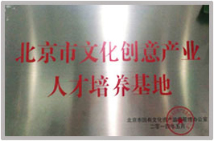
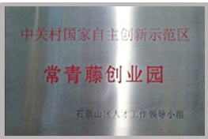
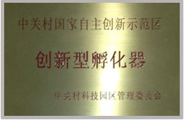

-
博看文思简介
北京博看文思信息技术有限公司（前身为博看科技）成立于2009年，是中国移动互联网研发培训专家与领导者。由蓝色光标集团、薛蛮子、徐小平、李开复、雷军共同投资，截至目前，博看文思已经发展为国内最具有创造性、最具技术实力的3G跨平台iOS、Android、HTML5智能移动研发培训机构。博看文思技术实力雄厚，拥有自主知识产权的游戏物理定位、3D引擎和手机跨平台开发框架。截至目前，博看文思与众多世界500强跨国企业合作，提供3G开发服务，在国际3G开发市场崭露头角，赢得广泛赞誉。
博看文思管理团队
- 赵文权
-
蓝色光标创始人
毕业于北京大学政府管理学院，现任蓝色光标传播集团董事长兼首席执行官。2010年，赵文权与管理团队共同带领蓝色光标在国内创业板上市，蓝色光标由此成为第一家上市的本土公共关系专业服务公司。 2013年4月25日在赵文权的主导下，蓝色光标宣布将以约3.5亿人民币收购全球公关巨头Huntsworth，成为其第一大股东。2011年，赵文权为博看注资。
- 薛蛮子
-
中国天使投资第一人
薛蛮子是UT斯达康创始人之一，曾担任中国电子商务网8848董事长、中华学习网董事长等职务。薛老投资过的项目包括PCPOP、李想的汽车之家、方三文的雪球财经以及杜子健的华艺百创等公司。被奇虎360董事长周鸿祎称为“中国天使投资第一人”。2011年薛蛮子为博看文思投资。
- 李开复博士
-
创新工场董事长兼首席执行官
李开复博士曾在谷歌公司担任全球副总裁兼大中华区总裁，在加盟Google之前，从2000-2005李开复博士任微软公司全球副总裁，在服务器软件、Windows、Office里面都提供了重要的核心技术和产品。在晋升全球副总裁之前，李博士于1998创办微软中国研究院，在极短时间内创建了一个国际一流的计算机研究院。2009年9月李开复博士创办创新工场。2013年，李开复博士为博看文思注资。
- 徐小平
-
真格基金创始人
中国著名天使投资人，在创办真格基金之前，徐小平先生是中国最大教育培训机构新东方教育科技集团（NYSE: EDU）的联合创始人。他在广大中国留学生中具有强大的影响力，很多学生都从他的演讲、教学以及畅销书中受益良多。 2006年，徐小平先生被南方人物周刊评选为“中国魅力50人”之一，2004年入选福布斯杂志“中国名人榜 Top 100” 。2011年，徐小平老师为博看文思注资。
- 雷军
-
小米创始人、董事长兼CEO
雷军1992年参与创办金山软件，1998年出任金山软件CEO。1999年创办了卓越网。2007年，金山软件上市后，雷军卸任金山软件总裁兼CEO职务，担任副董事长。之后几年，雷军作为天使投资人，投资了凡客诚品、多玩、优视科技等多家创新型企业。2011年7月，雷军重返金山软件，任金山软件公司董事长。2010年4月6日，雷军选择重新创业，建立了小米公司。2013年，雷军为博看文思注资。
- 博看文思校区
博看文思荣誉
-

- 北京市文化创意产业人才培训基地
-

- 常青藤创业园指定人才培训基地
-

- 中关村国家自主创新示范区创新孵化器
- 新浪网最具综合实力教育集团
博看文思大事件